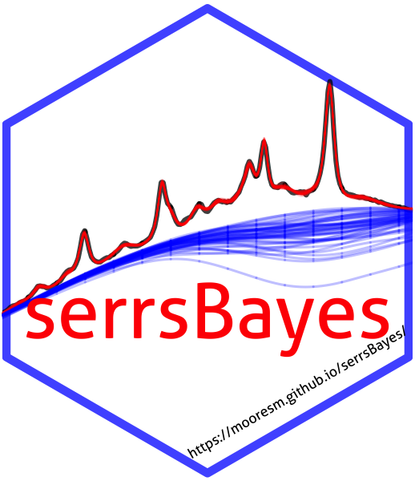
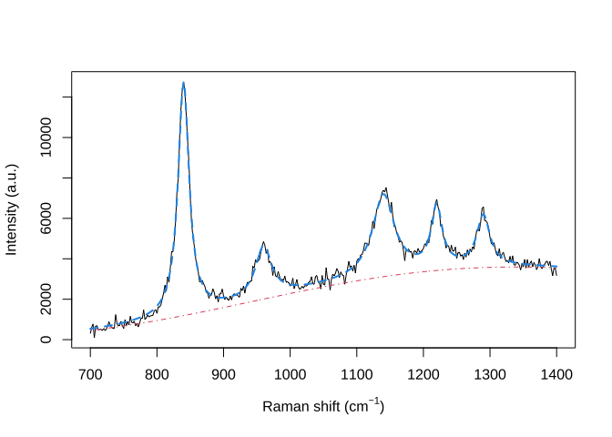
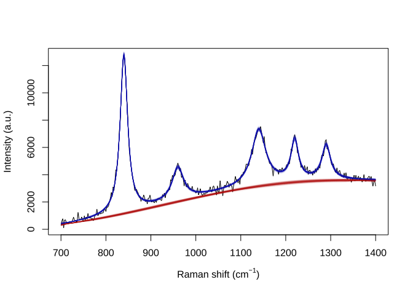

serrsBayes provides model-based quantification of surface-enhanced resonance Raman spectroscopy (SERRS) using sequential Monte Carlo (SMC) algorithms. The details of the Bayesian model and informative priors are provided in Moores et al. (2026) “Bayesian modelling and quantification of Raman spectroscopy.,” published in the 2025 MATRIX Annals, Part II (Springer). Development of this software was supported by the UK Engineering & Physical Sciences Research Council (EPSRC) programme grant “In Situ Nanoparticle Assemblies for Healthcare Diagnostics and Therapy” (ref: EP/L014165/1).
Installation Instructions
Stable releases, including binary packages for Windows & Mac OS, are available from CRAN:
install.packages("serrsBayes")The current development version can be installed from GitHub:
devtools::install_github("mooresm/serrsBayes")Example Usage
To simulate a synthetic Raman spectrum with known parameters:
set.seed(1234)
library(serrsBayes)
wavenumbers <- seq(700,1400,by=2)
spectra <- matrix(nrow=1, ncol=length(wavenumbers))
peakLocations <- c(840, 960, 1140, 1220, 1290)
peakAmplitude <- c(11500, 2500, 4000, 3000, 2500)
peakScale <- c(10, 15, 20, 10, 12)
signature <- weightedLorentzian(peakLocations, peakScale, peakAmplitude, wavenumbers)
baseline <- 1000*cos(wavenumbers/200) + 2*wavenumbers
spectra[1,] <- signature + baseline + rnorm(length(wavenumbers),0,200)
plot(wavenumbers, spectra[1,], type='l', xlab=expression(paste("Raman shift (cm"^{-1}, ")")), ylab="Intensity (a.u.)")
lines(wavenumbers, baseline, col=2, lty=4)
lines(wavenumbers, baseline + signature, col=4, lty=2, lwd=2)
Fit the model using SMC:
lPriors <- list(scale.mu=log(11.6) - (0.4^2)/2, scale.sd=0.4, bl.smooth=10^11, bl.knots=50,
beta.mu=5000, beta.sd=5000, noise.sd=200, noise.nu=4)
tm <- system.time(result <- fitSpectraSMC(wavenumbers, spectra, peakLocations, lPriors))Sample 200 particles from the posterior distribution:
print(tm)
#> user system elapsed
#> 164.263 1.925 43.341
samp.idx <- sample.int(length(result$weights), 200, prob=result$weights)
plot(wavenumbers, spectra[1,], type='l', xlab=expression(paste("Raman shift (cm"^{-1}, ")")), ylab="Intensity (a.u.)")
for (pt in samp.idx) {
bl.est <- result$basis %*% result$alpha[,1,pt]
lines(wavenumbers, bl.est, col="#C3000009")
lines(wavenumbers, bl.est + result$expFn[pt,], col="#0000C309")
}